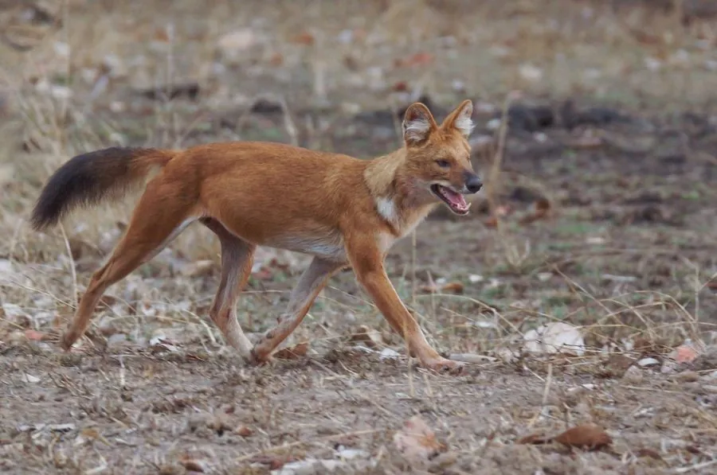

哺乳动物 · 动物界
豺 Cuon alpinus

亚洲特有的犬科动物，成群协作捕猎，靠口哨般的叫声保持联络，历史上广泛分布于东亚和东南亚山林。
- 分类
- 门脊索动物门纲哺乳纲目食肉目科犬科属豺属
- 栖息环境
- 森林、灌丛与山地草原，偏好有岩洞和浓密植被的丘陵
- 地理分布
- 南亚、东南亚及中国西南、华南和东北的山区，现多为零星种群
- 保护级别
- IUCN 濒危（EN）；中国国家一级保护动物
物种志
豺体长 0.9–1.1 米，尾长 0.4–0.5 米，体重 12–20 kg，体形比狼小。它的被毛为红棕色，腹部和四肢偏白，尾毛蓬松呈深褐色，吻部较短，耳圆而宽，牙齿数量比狼少，臼齿适应切割肉类。
豺栖息于亚洲的森林、灌丛和山地草原，偏好有岩洞和浓密植被的丘陵地带。它们以 5–12 只的群体活动，合作围捕水鹿、斑羚、野猪等中型有蹄类，群体成员通过高而尖的哨音般叫声保持联络。豺的繁殖季在冬末春初，妊娠期约 60–70 天，每胎 3–6 仔，由全群共同照顾。由于栖息地破碎、猎物减少和传染病，豺的分布区急剧萎缩，全球成熟个体估计不足 2500 只。
形态与习性
- 食性水鹿、斑羚、野猪等中型有蹄类，群体协作捕猎
- 体长0.9–1.1 m，尾长 0.4–0.5 m
- 体重12–20 kg
- 寿命野外约 10 年
- 繁殖冬末春初繁殖，妊娠期约 60–70 天，每胎 3–6 仔
- 社会结构以 5–12 只的群体活动，全群共同抚育幼仔
趣味知识
- 豺用哨音般的高频叫声在密林中保持联络，被称为“会吹口哨的犬”。
- 豺群围猎时分工明确，常把猎物从山坡上驱赶下来。
- 豺的牙齿比狼少，但齿尖锐利，适合快速切割肉类。